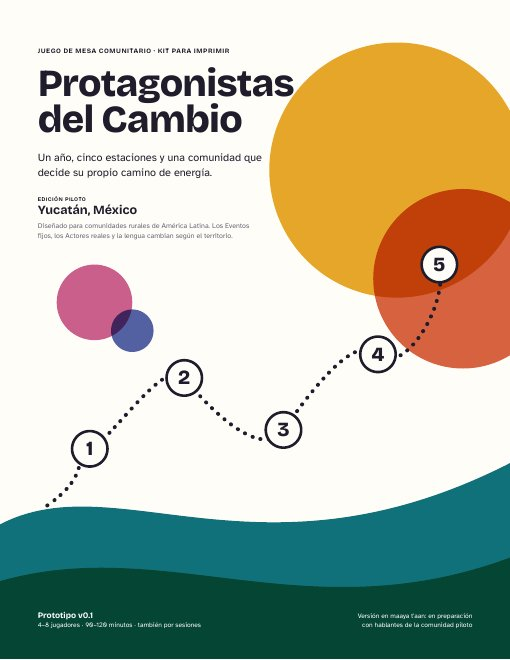
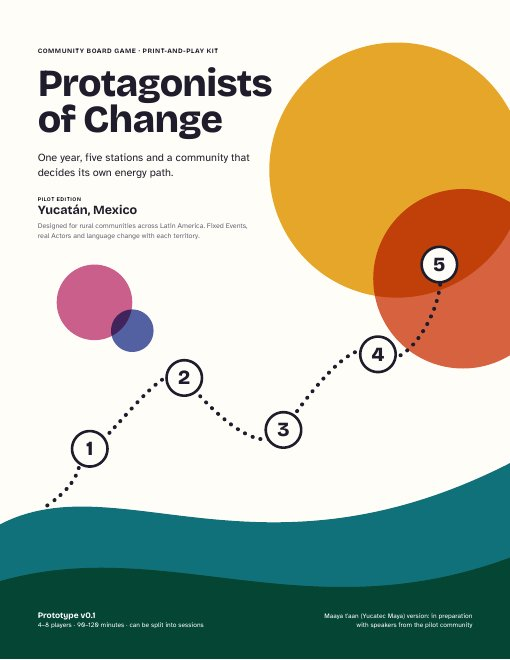
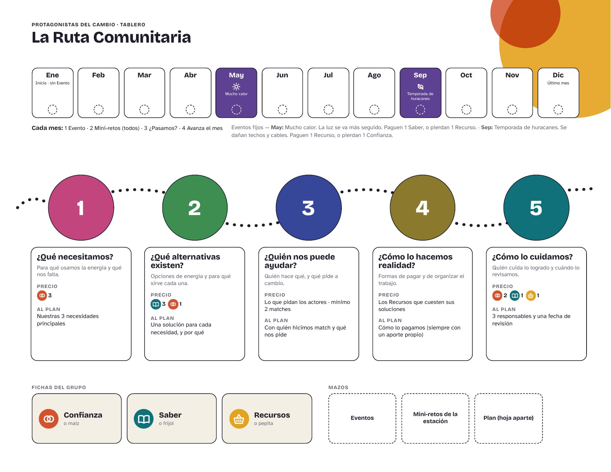

Primero la comunidad. Después la tecnología.
Un juego de mesa para que la comunidad decida su camino de energía, y una herramienta que conecta su Plan con quienes pueden ayudar.
Lo que nos dicen los datos del territorio piloto
de los hogares de Yucatán cocina con leña o carbón; el promedio nacional es 13.5 %. Por eso el juego no habla solo de paneles.
Agencia de Energía de Yucatán, 2025de la población rural de América Latina no tiene conectividad significativa. Por eso el juego es físico y la herramienta la usa solo quien facilita.
BID · IICA · Microsoft, vía DPL NewsComunidades mayas de Muna, Sacalum y Ticul lograron cancelar megaproyectos solares hechos sin ellas. La tecnología sin la comunidad no avanza.
Por Esto, junio 2026Del juego en la mesa a una conversación real con quien puede ayudar
Cada paso produce algo que alimenta al siguiente. La comunidad decide en cada uno.
Juego físico
La comunidad recorre 5 estaciones en un año de juego: necesidades, alternativas, actores, financiamiento y cuidado.
Hoja de Plan
Los acuerdos se escriben en la Hoja de Plan Comunitario. Ganen o pierdan, el Plan se queda con la comunidad.
Carga del Plan
Con el consentimiento del grupo, quien facilita pasa el Plan a esta página. Sin nombres de personas.
Match real
El Plan se cruza con la base de actores reales del territorio. La comunidad dice «Sí, hablemos» o «No por ahora».
Seguimiento y MEL
El comité contacta a sus actores. El equipo da seguimiento en la fecha de revisión y mide lo aprendido.
El kit para imprimir
18 páginas en tamaño carta: reglas, consentimiento, tablero, Hoja de Plan y 100 cartas. Se juega con maíz, frijol y pepita como fichas.


- Reglas en 2 páginas y consentimiento para leer en voz alta
- Tablero: calendario de 12 meses y 5 estaciones
- 8 roles sin género y la carta del Juez del mes
- 25 mini-retos: pregunta, plática y lo que tenemos
- Eventos, soluciones, financiamiento y 8 actores para doblar

Cargar un Plan y hacer el Match
Después del juego, quien facilita pasa la Hoja de Plan aquí. La página propone actores reales; la comunidad decide con quién hablar.
Antes de cargar: el consentimiento del grupo
Marca lo que el grupo aceptó en el Paso 0 del juego. Sin las dos primeras, no se carga nada.
La Hoja de PlanEjemplo · cámbialo
Copia lo que la comunidad escribió. No pongas nombres de personas.
Estación 1 · Sus 3 necesidades principales
Estación 2 · Las soluciones que eligieron
Estación 3 · Tipos de actores con los que hicieron match en el juego
Está en la página 2 de la Hoja de Plan. En el Match solo aparecerán actores de estos tipos.
Cómo se organiza la comunidad · respuestas cortas
Estación 3 en la vida real: el Match
Estos actores ayudan con las soluciones que eligieron. Léanlas en grupo y decidan: «Sí, hablemos» o «No por ahora». También pueden deslizar la carta.
Piloto: estos actores son ejemplos tomados de fuentes públicas. No hemos establecido relación con ninguno de ellos.
Sí, hablemos
No por ahora
La ruta de contacto de la comunidad
Esta página no envía nada. La comunidad decide cuándo y cómo contactar a cada actor. Prepárense para lo que cada uno pide.
Mensaje para presentarse (para copiar en WhatsApp o en una carta)
Lo que están diciendo las comunidades
Solo totales, sin datos de ninguna comunidad en particular.
Quién puede ayudar, qué hace y qué pide
Selección de ejemplo para demostrar cómo funciona la página piloto. No hemos establecido relación con ninguno de estos actores. La información viene de fuentes públicas revisadas el 22 de octubre de 2026; «Por confirmar» indica un dato que no encontramos.